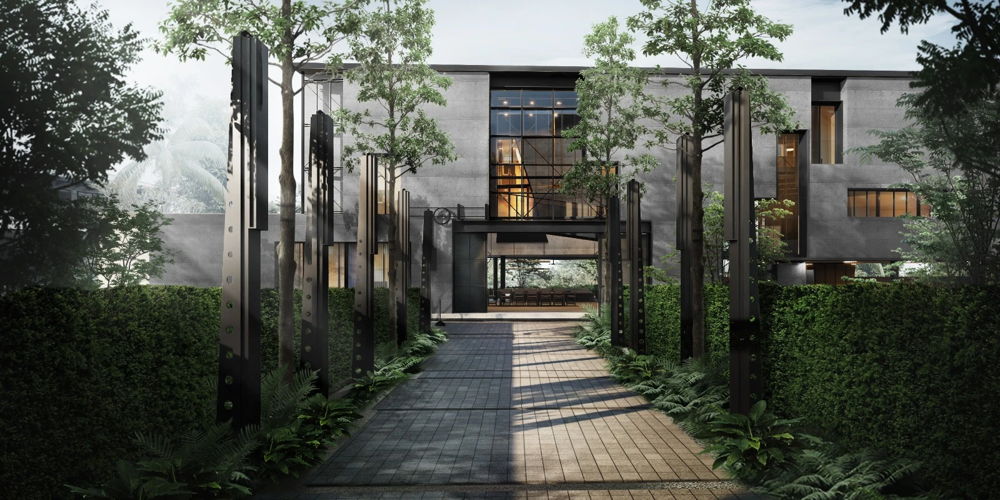
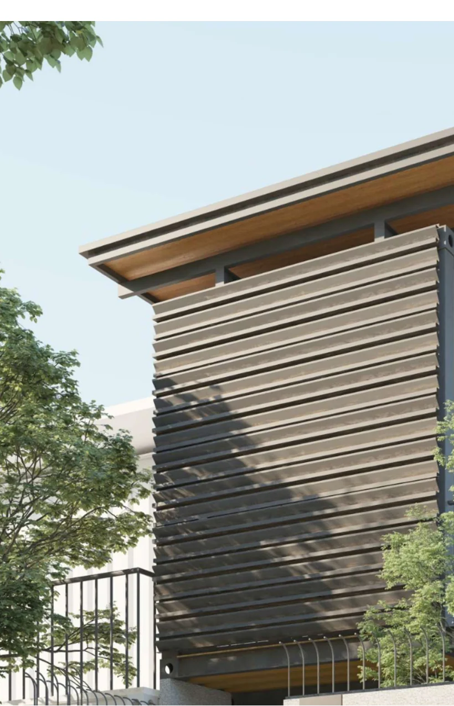

Designing at the
intersection of form
and performance.
I'm Ricardo Lionar — an architectural designer and building performance researcher exploring how buildings can be both expressive and environmentally responsive.
Explore selected work
Architecture,
in context.
A selection of residential, commercial and research-led projects across Singapore, Indonesia and Australia.
Architecture informed
by evidence.
My work spans architectural design, technical documentation, environmental simulation and research — connecting design intent with measurable building performance.
With architectural practice experience across Indonesia and Singapore, I've worked on residential, hospitality and mixed-use projects from concept design through documentation and coordination.
In Adelaide, my industry PhD research with BlueScope Building Components investigates how self-shading steel façades can improve thermal performance through geometric design.
Research as
design inquiry.
Performance-driven development of self-shading steel cladding profiles, connecting experimental evidence, simulation and architectural design.

Self-shading steel façade profiles
Investigating how profile geometry, solar exposure and cavity airflow influence façade heat gain — through experimental testing, building energy simulation and computational fluid dynamics.
Explore project in portfolio ↗Research publications (ORCID) ↗